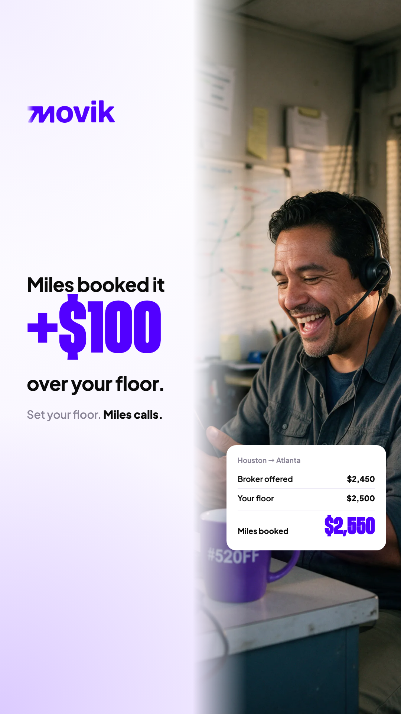
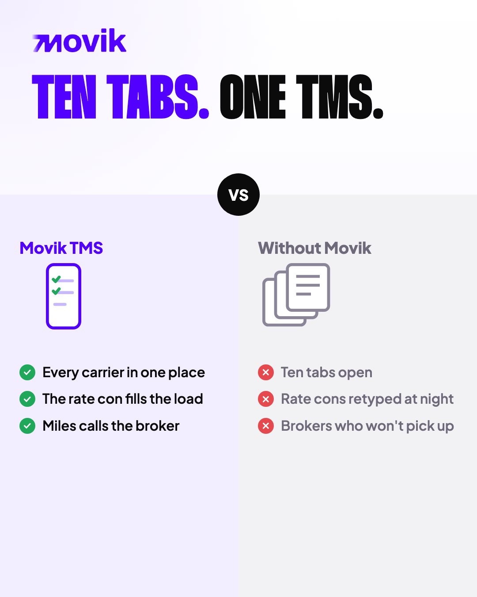
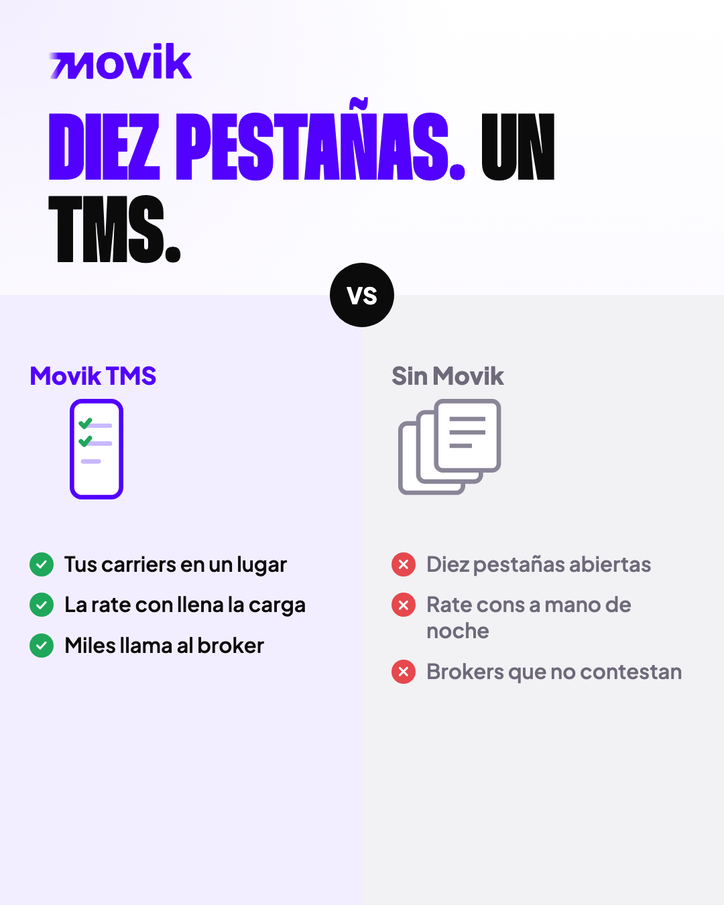
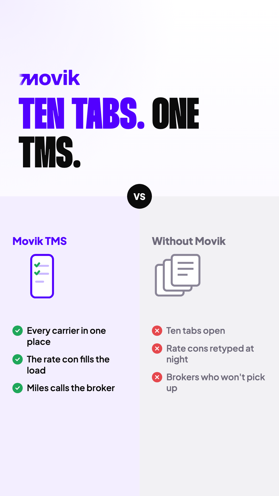
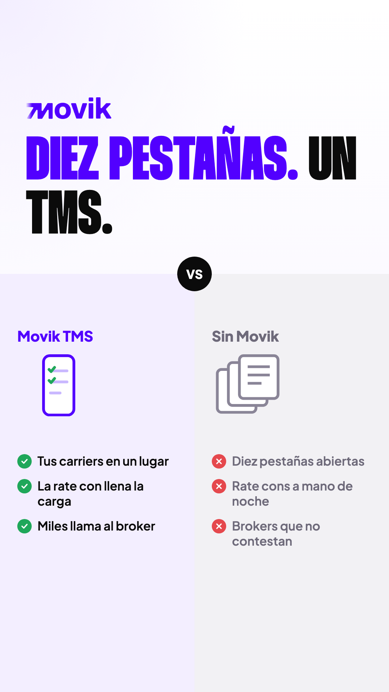

MoviTMS para dispatchers · piezas de pauta
Tres piezas en feed (4:5) e historia (9:16), en inglés y español. Clic en la imagen para descargarla. Ver las landings
01 · Un solo lugar
Landing A


02 · Miles, +$100
Landing B




03 · Diez pestañas, un TMS
Landing A







